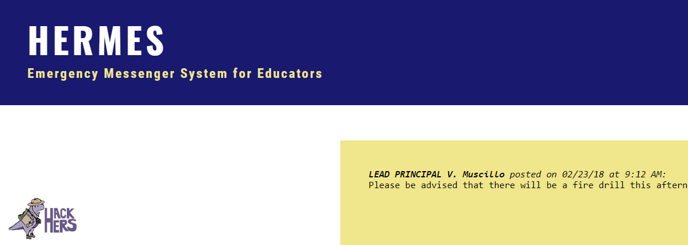
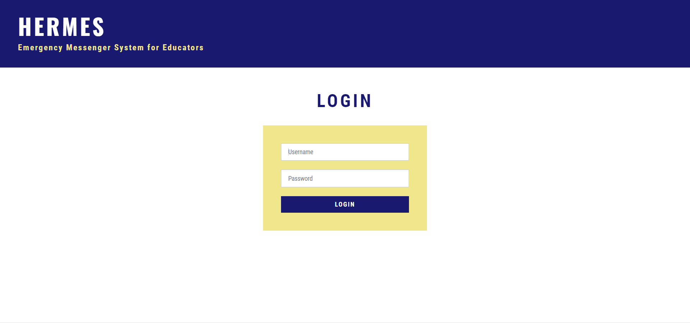
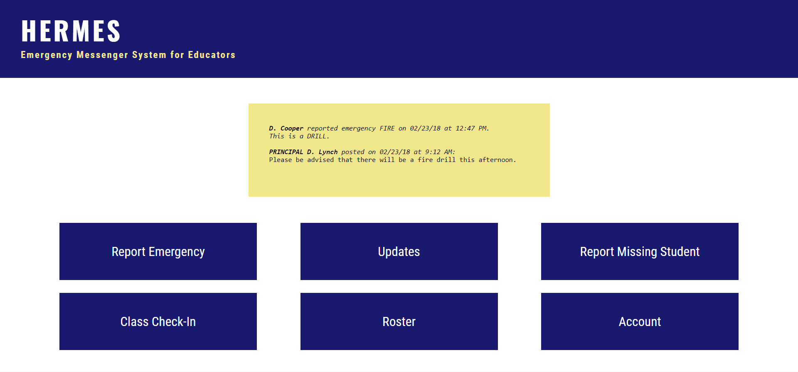
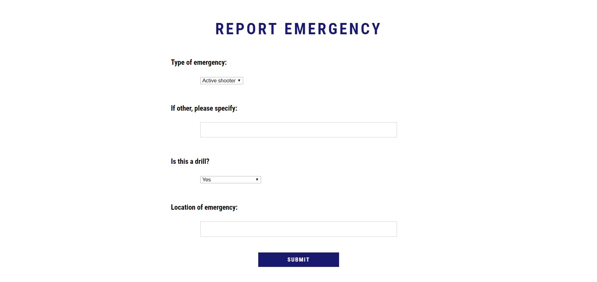
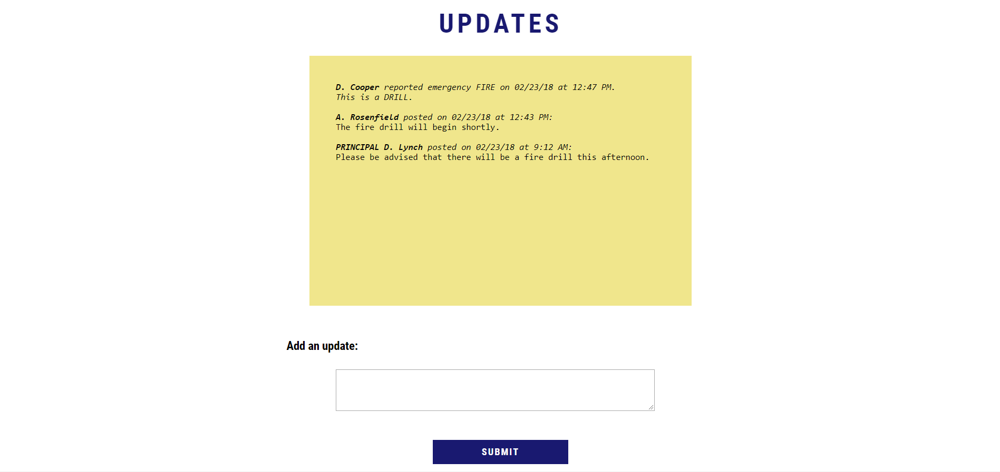
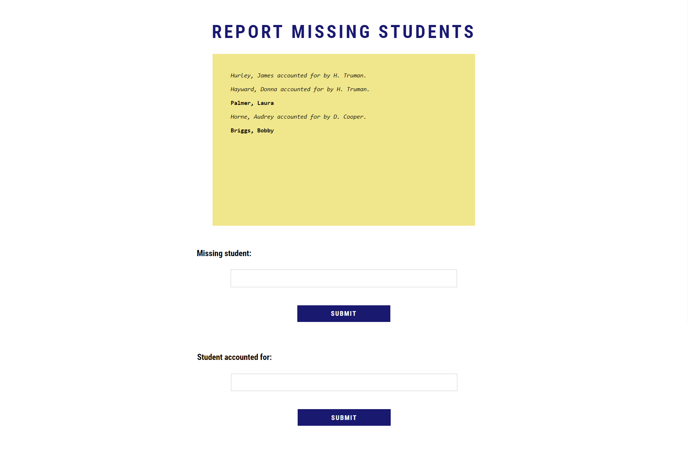
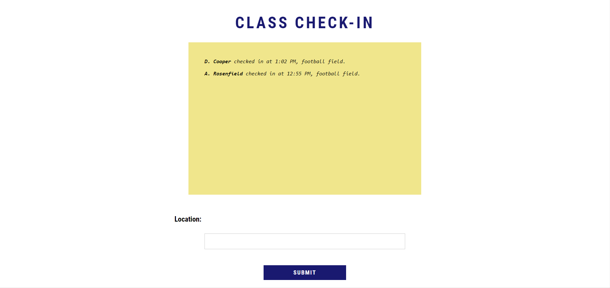
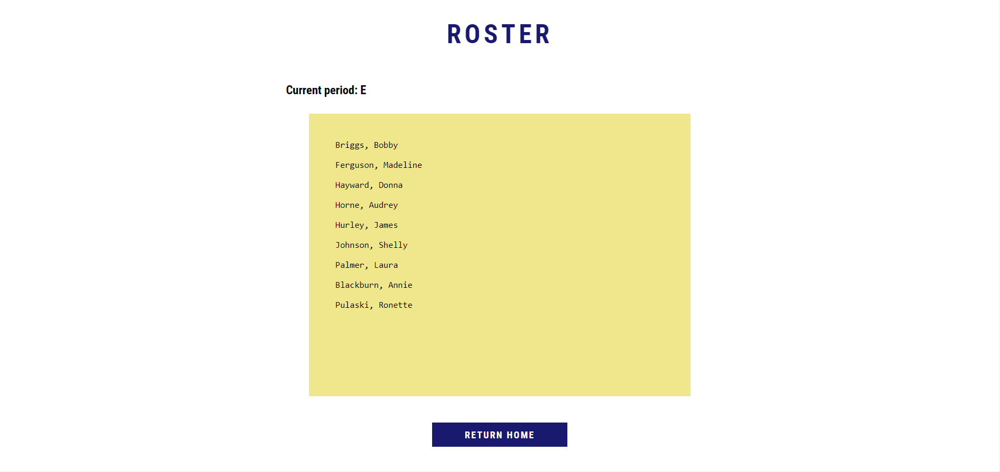
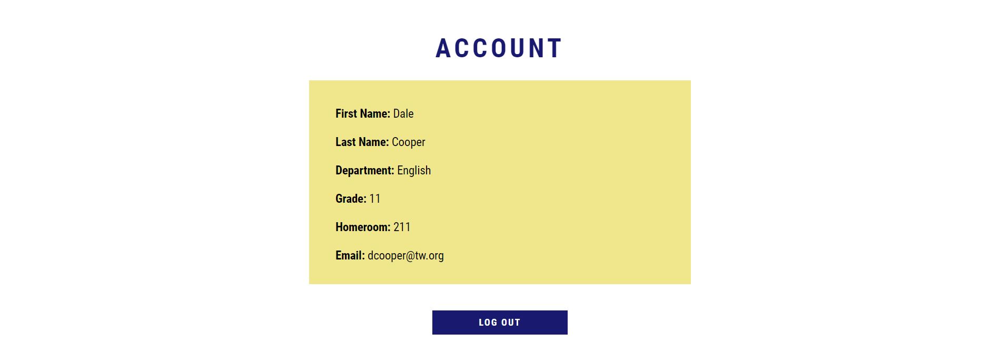

JPMorgan Chase Best Hack for Social Good Award
HackHERS 2018 By Women for Women Award
HackHERS is a 24-hour women-centric hackathon hosted annually at Rutgers University. During this event, I independently designed Hermes, a messenger system designed for use by educators during emergency situations. Even after the police have been called and the school goes into lockdown or evacuation procedures, there is no effective way for administrators and educators to communicate, often leaving teachers wondering what exactly is happening during an emergency. This application is designed to provide administrators and educators an efficient method of communicating vital information. I implemented the web application using HTML and CSS. I also began to create a MySQL database to hold login information, class rosters, updates, and reports using Relational Database Service from Amazon Web Services. I planned to use Javascript to connect the database to the front-end HTML.
Below is a walkthrough of the site's functions.

The login page provides fields for teachers and administrators to input their usernames and passwords to log into their individual accounts.

The home page features a large yellow box at the top, which will contain reports of emergencies and important updates from administrators. There are also buttons to six other pages to report emergencies, input and receive updates, report missing students, check in with their class's location, view the roster for that class period, and view account information.

On the report emergency page, educators can report any kind of emergency situtation or drill. The type of emergencies in the dropdown are "active shooter," "fire," "bomb threat," and "other." If there is another kind of emergency, the teacher can input specific details. The teacher can also specify whether the event is a drill, and the location of the emergency within the school so others know to avoid the area.

The updates page features emergency reports and updates provided by administrators and educators. Unlike the front page, where only the most important updates are provided, updates input by all teachers will be shown.

During evacuation or lockdown drills, there are often students out of their designated classrooms, such as when they leave for the restroom. This page provides a form for teachers to report a student missing, and for any teacher that pulled a student into their class during an emergency to account for that student. This ensures all students are properly accounted for.

The class check-in page allows teachers to alert their administrators of their class's location, and that their class is safe. During lockdowns, the location could be either the teacher's assigned classroom for that period, or perhaps elsewhere, like the auditorium. During evacuation drills, the teacher can report their outdoor location.

A teacher's account will hold rosters for all of their classes. Which class roster is shown depends on the time of day, and what class is occuring during that time.

The account page shows all of the teacher's account information and a logout button.